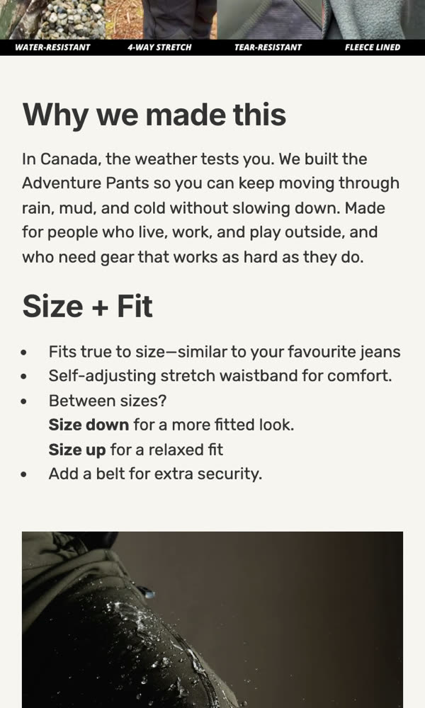
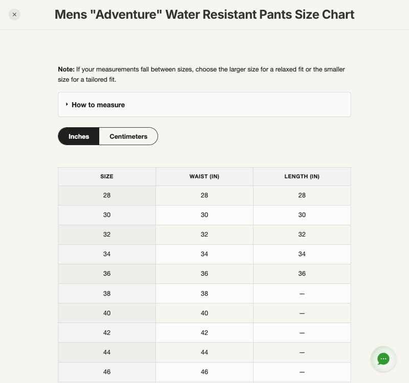
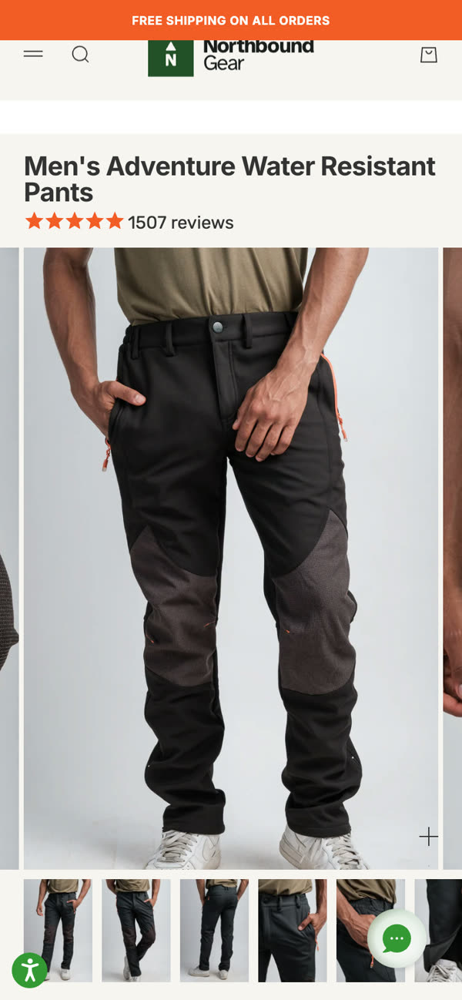
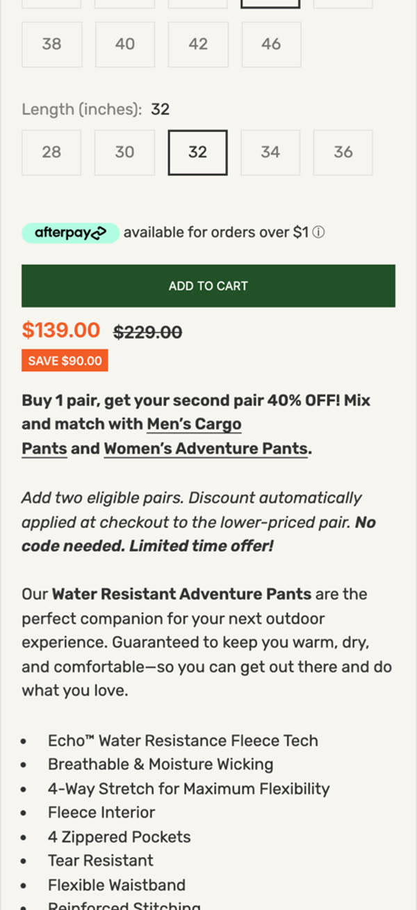
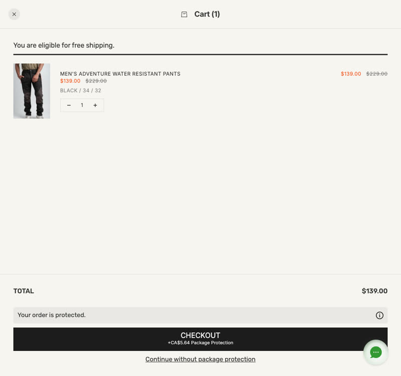
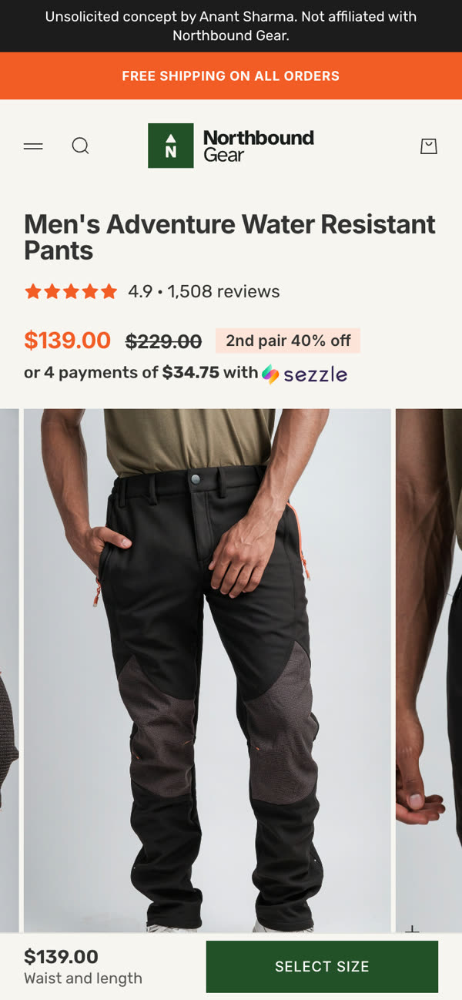
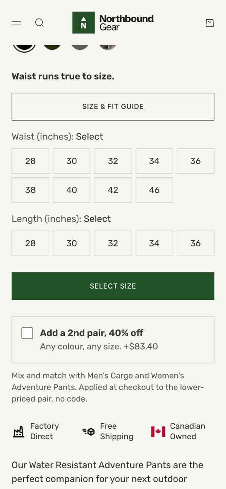
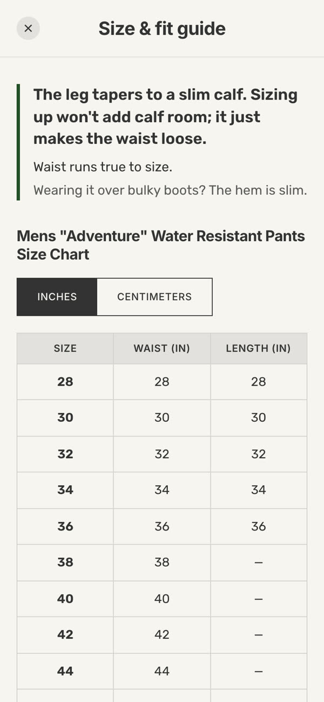
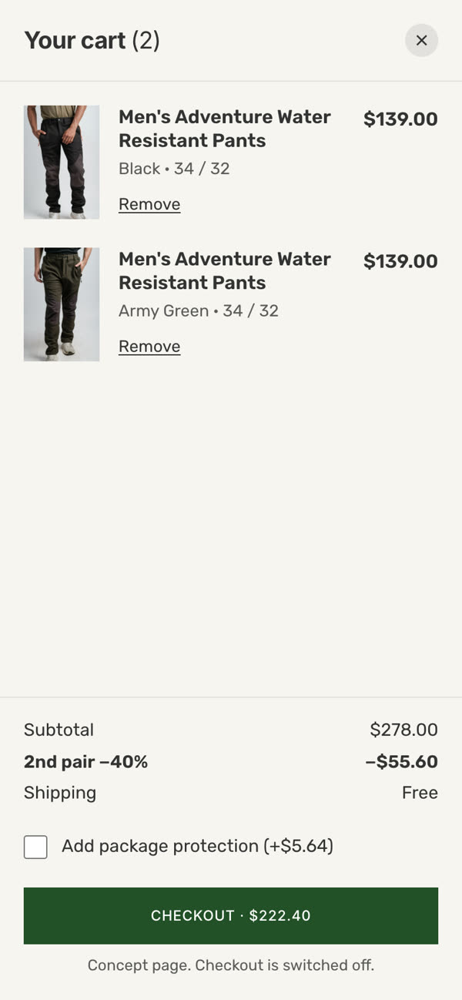
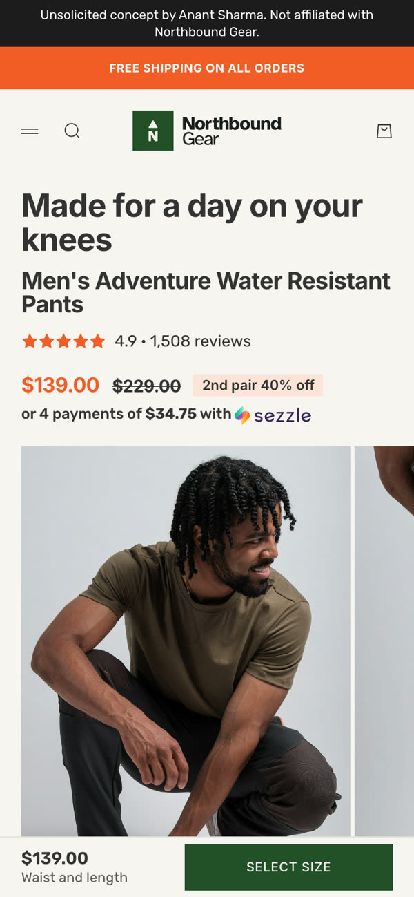

Northbound Gear: fixing fit and offer on a pants product page
Unsolicited concept. Not affiliated with Northbound Gear. Self-initiated, no client.
- The page tells shoppers the pants fit "true to size" and to size up for comfort. The reviews say the calf is slim and sizing up just loosens the waist.
- I audited the page, ranked six hypotheses with ICE, rebuilt it with the top three, and wrote the test plan before anything ran.
- Not run. I have no access to Northbound's traffic, so there is no result to report.
- Live before and after pages are below, plus one ad-audience variant for outdoor workers.
Situation
Northbound Gear is a family-owned brand in Vancouver. Its Men's Adventure Water Resistant Pants sell for CA$139 and carry 4.9 stars from 1,508 reviews. On a phone, Add to cart doesn't show up until about 1,250px down the page, and the fit advice sits at 2,592px.
I picked it because the page and its own reviews disagree about fit. To make the "before" honest, I cloned the live page (CAD, 26 Nov 2026) into a Next.js build and redesigned a copy of it, so both pages below run on the same code.
What I found
Sources: the page itself, 64 reviews (low ratings over-sampled on purpose, so counts show that a theme exists, not how common it is), and three competitor product pages.
1. The fit copy points the wrong way
The page says "Fits true to size, similar to your favourite jeans" and "Size up for a relaxed fit". 8 of the 64 reviews complain about a tight calf. Two sized up for the leg and got a waist that falls down.


2. No fit help where the size gets picked
On mobile the size chips sit near y=1,000 and Size + Fit is 1,600px further down. The only aid at the picker is a "Size chart" link 14px tall, and the chart only repeats the label: waist 34 is 34.


3. Add to cart comes before the price
On mobile, Add to cart (y=1,247) sits above the price (y=1,297). Neither is on the first screen, and there's no sticky bar.




4. The best offer is two paragraphs of prose
"Second pair 40% off" has no badge, no way to add a second pair, and nothing in the cart drawer. 14 of 64 reviewers own two or more pairs, so the demand is there.


Before and after
Both pages are static exports of the same build, so you can click around them. Checkout is switched off. Every changed element carries a data-hyp attribute naming its hypothesis (12 in all); search for it in dev tools.
First phone screen H6H5


The size picker H1+H3H5


The size guide H1+H3


The cart H5


Ad to page: outdoor workers
The reviews hold an audience the page never speaks to: people who work on their knees. The most-voted review in my sample (95 helpful votes) is from a landscaper.
"I work in the landscaping and playground building field, and these pants are the best I’ve ever experienced wearing"Mark W., 5 stars, 2020
The knee panels show in every product photo and aren't named anywhere. I wrote a Meta ad concept around the hook "Spend your day on your knees?" and a page variant that repeats it: the headline "Made for a day on your knees", a crouching hero shot, three benefits with knee panels first, and Mark's review right under the buy box. The buy-box changes are identical to the base redesign, so an ad split only tests the message. I'd judge it on cost per add-to-cart against the base redesign, same ad.


Three angles I rejected
- Hikers. The biggest group in the reviews (15 of 64), but it's what the page already says, and it leans on "warm and dry" right where water resistance runs out.
- Gift buyers. Right season, but they size without the wearer, and the gift-sizing help (H4) isn't built.
- Hunters. The pitch is "quiet fabric", and a 3-star review says the knee panel spooked a moose.
Hypotheses
Three carried forward, tested in this order, one at a time, because all three sit in the same buy box.
H6Price first, sticky Add to cart
Moving the price under the title and adding a sticky mobile bar (it reads "Select size" until a size is chosen) will raise mobile add-to-cart rate.
H1+H3Fit at the picker
Putting "Waist runs true to size." and a full-width Size & fit guide button above the waist chips, with the guide opening on "The leg tapers to a slim calf. Sizing up won't add calf room; it just makes the waist loose.", and deleting the size-up advice, will raise net kept orders per visitor and lower size-related returns.
H5An offer you can see
A "2nd pair 40% off" badge at the price, an "Add a 2nd pair" checkbox and a discount line in the cart will raise the share of orders with two pairs.
How I ranked them
Each finding became one hypothesis, scored 1 to 10 on Impact (how many shoppers it reaches, and how close to the purchase), Confidence (strength of evidence, capped at 8 because I have no analytics) and Ease. The score is the plain average. H1 started at 7.7 and dropped to 6.7 when I moved the calf warning off the picker and into the guide: it reaches fewer people there.
| ID | Hypothesis | I | C | E | Score | Call |
|---|---|---|---|---|---|---|
| H3 | Fit help at the waist picker | 7 | 6 | 8 | 7.0 | Carried, with H1 |
| H1 | "Waist runs true" at the picker, taper in the guide | 6 | 5 | 9 | 6.7 | Carried, with H3 |
| H6 | Price first, sticky mobile Add to cart | 6 | 6 | 8 | 6.7 | Carried |
| H5 | Visible 2nd-pair offer, page to cart | 8 | 5 | 5 | 6.0 | Carried |
| H4 | Gift sizing: measure a pair he already wears | 6 | 5 | 5 | 5.3 | Not carried: needs H2's data |
| H2 | Size chart with leg measurements | 6 | 5 | 4 | 5.0 | Not carried: measurements aren't published |
Result
Not run. No traffic access.
The plan, written before anything goes live. Each test runs 50/50 by visitor with a fixed horizon and no peeking. Baselines are public benchmarks, not Northbound's numbers.
| Test | Primary metric | Sample needed (both arms) |
|---|---|---|
| H6 | Mobile add-to-cart rate, 6.0% → 6.6% | 51,480 mobile visitors |
| H1+H3 | Net kept orders per visitor, 1.38% → 1.59% Co-primary: size-related return rate, 8% → 6% | 107,082 visitors 5,108 orders |
| H5 | Orders with two pairs, 5% → 7.5% | 2,942 orders |
weeks = visitors needed ÷ weekly PDP sessions
With Northbound's numbers I'd fill this in. For the order-based metrics, use weekly orders instead. Returns only count once the 60-day window closes, so the H1+H3 read comes about 12 weeks after the last order.
What I'd do next
- Ask the brand for leg measurements: thigh, knee, leg opening and rise for each waist. That unlocks H2 (a real pants size chart) and then H4, a "measure a pair he already wears" guide. 8 of 64 reviews were bought for someone else.
- Watch H1. The calf warning now sits one tap away. If calf-related returns don't move, or fewer than about 1 in 5 buyers open the guide, the next test puts the taper line at the picker itself.
Cleanup list
Fixes that don't need a test.
- Package protection (+CA$5.64) is pre-added and folded into the Checkout button.
- Reviews are the last section, can't be filtered by size or use, and the summary is labelled "Ai Overview:".
- The FAQ skips calf fit, boots and delivery time.
- Mobile Lighthouse score 35, LCP 20.6s. The page loads a 29-image gallery covering every colour.
- White on the brand orange is about 3.3:1, and the Size chart link is 14px tall.
- Section titles aren't headings, and the looping video has no pause control.
- The URL says "waterproof" and the title says "Water Resistant". The review count reads 1507 in one place and 1,508 in another.
Unsolicited concept. Not affiliated with Northbound Gear. Product photos and review quotes are Northbound's, shown only to illustrate the redesign. Back to the portfolio